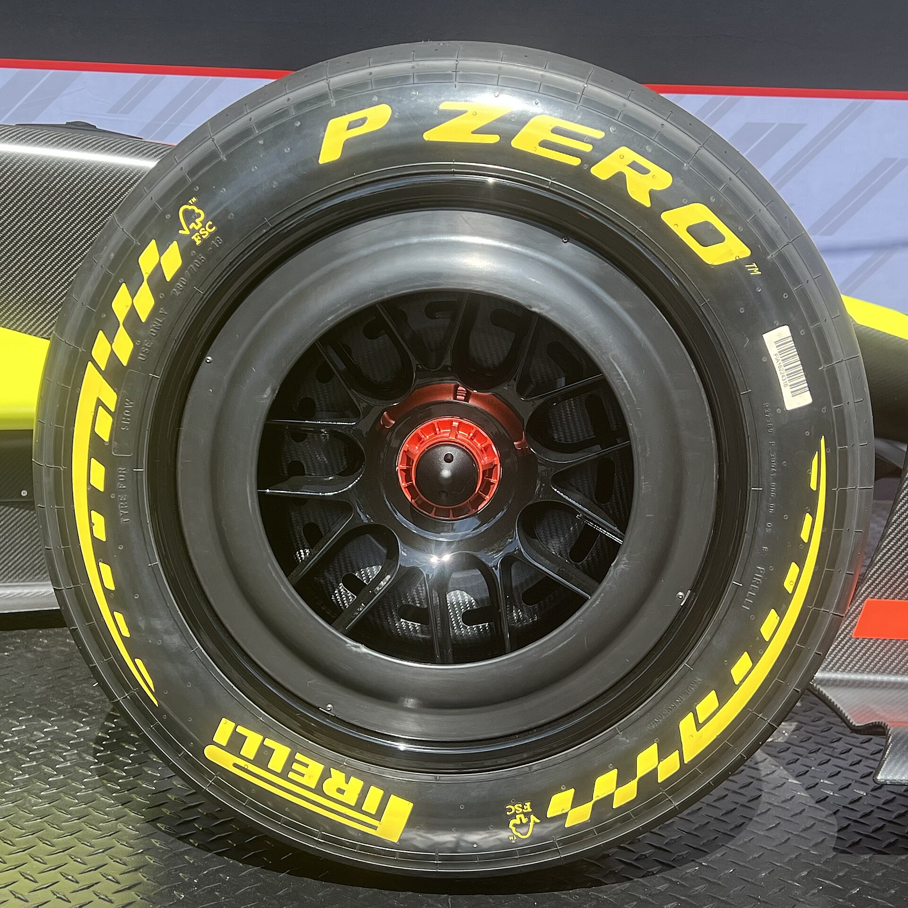
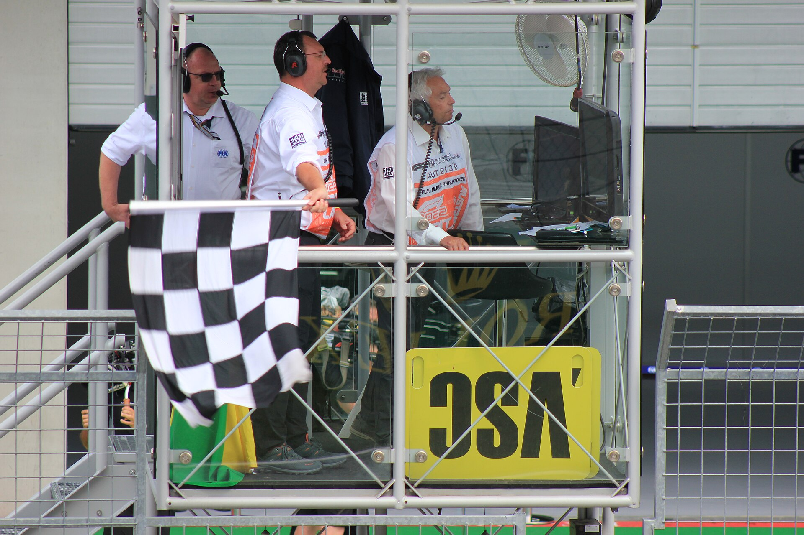
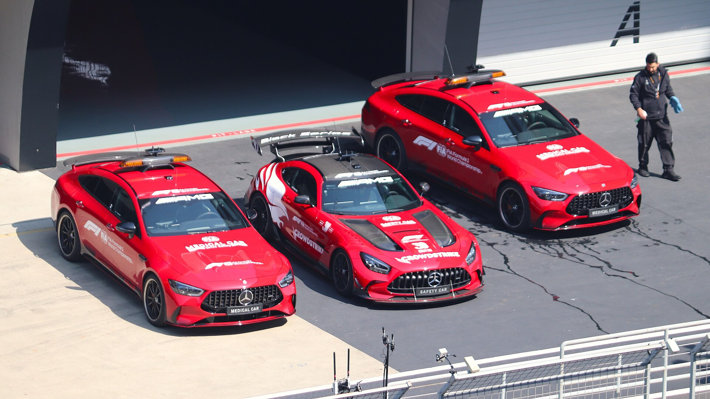

Commentators talk to fans who already know the words. This page is the translation layer. Skim it once, then keep it open on your phone during your first race and look things up as you hear them.
Glossary
- Active aero
- The 2026 system that moves the front and rear wings during a lap. Corner Mode closes the wings for grip; Straight Mode flattens them for speed.
- Apex
- The innermost point of a corner. Drivers aim to "hit the apex" for the fastest line through.
- Blue flag
- Shown to a slower car about to be lapped by the leaders. The driver must let the faster car through without fighting.
- Box
- Radio shorthand for "pit." "Box, box" means come into the pits this lap.
- Chequered flag
- Waved at the finish line to end a session or race.
- Constructor
- A team. Called a constructor because each team designs and builds its own car.
- Dirty air
- The turbulent air behind another car. It robs the following car of downforce, which is why overtaking is hard.
- Downforce
- The aerodynamic force that pushes the car onto the track, letting it corner far faster than a road car.
- DRS
- Drag Reduction System, the movable rear-wing flap used from 2011 to 2025. Retired for 2026 and replaced by active aero and Overtake Mode.
- Formation lap
- The slow lap before the start, used to warm the tires and brakes, that ends with the cars lined up on the grid.
- Grid
- The starting lineup, set by qualifying. Also used to mean the whole field of teams and drivers.
- Grid penalty
- A punishment that moves a driver back a set number of starting positions.
- Lock-up
- A wheel that stops turning under braking, which flat-spots the tire and sends up a puff of smoke.
- MGU-K
- Motor Generator Unit, Kinetic. The electric motor that recovers energy under braking and deploys it for power. In 2026 it delivers about half the car's output.
- Overcut
- Staying out longer than a rival before pitting, hoping to lap faster in clear air. The opposite of the undercut.
- Overtake Mode
- The 2026 replacement for DRS. A driver within one second of the car ahead can unlock an extra 0.5 MJ of electrical energy to attack.
- Paddock
- The area behind the pits where the team buildings, hospitality and media live.
- Parc fermé
- French for "closed park." Once qualifying starts, the car's setup is locked.
- Pit lane, pit wall
- The pit lane is the road alongside the track where cars stop for tires and repairs. The pit wall is where the team's strategists sit during the race.
- Podium
- The top three finishers, and the ceremony where they receive trophies and champagne.
- Pole position
- First place on the starting grid, earned by the fastest lap in Q3.
- Power unit
- The full engine package: the 1.6-liter turbocharged V6, the MGU-K, the battery and the electronics.
- Q1, Q2, Q3
- The three knockout rounds of qualifying. Q1 drops six cars, Q2 drops six more, and Q3 decides the top ten.
- Red flag
- The session or race is stopped, usually for a crash, debris or weather.
- Safety car
- A high-performance road car that leads the field at reduced speed while marshals clear an incident. Nobody may overtake.
- Slipstream (tow)
- The pocket of low-drag air directly behind another car on a straight. Following closely there gives a speed boost.
- Sprint
- A 100 km race on Saturday at six 2026 events, with points for the top eight.
- Stewards
- The officials at each race who judge incidents and hand out penalties.
- Stint
- The laps a driver runs on one set of tires between pit stops.
- Team radio
- The conversation between driver and pit wall, parts of which the broadcast plays.
- Tire degradation ("deg")
- How fast a tire loses grip over a stint. High deg means more pit stops.
- Track limits
- The white lines that define the edge of the track. A lap with all four wheels beyond the line is deleted in qualifying.
- Undercut
- Pitting before a rival so the fresh tires gain enough time to come out ahead of them when they stop.
- Virtual Safety Car (VSC)
- A safety-car period without the physical car. Every driver must slow to a set delta time.
- Yellow flag
- Danger ahead, slow down, no overtaking. A double yellow means be prepared to stop.
Tire compounds

Pirelli is the sole tire supplier. It makes five slick (dry) compounds, C1 to C5, from hardest to softest, plus intermediate and full wet tires. For each Grand Prix Pirelli picks three of the five slicks and labels them hard, medium and soft for that weekend. In a dry race every driver must use at least two different slick compounds.
| Tire | Sidewall color | What it is for |
|---|---|---|
| Hard | White | Long stints, slower single lap, slowest to warm up. |
| Medium | Yellow | The compromise. The most common race tire. |
| Soft | Red | Fastest over one lap, so it dominates qualifying, but wears quickly. |
| Intermediate | Green | Damp or drying track. Shallow tread. |
| Full wet | Blue | Heavy rain and standing water. Deep tread. |
Points
| Finish | 1st | 2nd | 3rd | 4th | 5th | 6th | 7th | 8th | 9th | 10th |
|---|---|---|---|---|---|---|---|---|---|---|
| Grand Prix | 25 | 18 | 15 | 12 | 10 | 8 | 6 | 4 | 2 | 1 |
| Sprint | 8 | 7 | 6 | 5 | 4 | 3 | 2 | 1 | 0 | 0 |
No bonus point for fastest lap (removed after the 2024 season). Both of a team's cars score for the Constructors' Championship, so a team can earn up to 43 points in a Grand Prix.
Penalties
The stewards can punish a driver for a collision, unsafe release from the pits, speeding in the pit lane, ignoring flags or repeated track-limits abuse. From mildest to harshest:
| Penalty | What happens |
|---|---|
| 5-second or 10-second time penalty | Served at the next pit stop or added to the race time at the finish. |
| Drive-through | The driver must drive through the pit lane at the speed limit without stopping. Costs about 20 seconds. |
| 10-second stop-and-go | The driver must stop in the pit box for ten seconds with no work done, then rejoin. |
| Grid penalty | Applied at the next race: the driver starts a set number of places further back. |
| Disqualification | Removed from the results, usually for a technical breach like an underweight car. |
| Penalty points | Added to the driver's super licence. Twelve points in a rolling twelve months means a one-race ban. |
Flags

| Flag | Meaning |
|---|---|
| Green | Track clear, racing resumes. |
| Yellow | Hazard ahead. Slow down, no overtaking. Double yellow: be ready to stop. |
| Red | Session stopped. Return to the pits. |
| Blue | A faster car is about to lap you. Let it by. |
| Yellow and red stripes | Slippery surface ahead (oil, water or debris). |
| Black and white | Warning for unsportsmanlike driving. The next offence brings a penalty. |
| Black with orange circle | Your car is damaged. Pit immediately. |
| Black | You are disqualified. Return to the pits. |
| Chequered | The session or race is over. |
